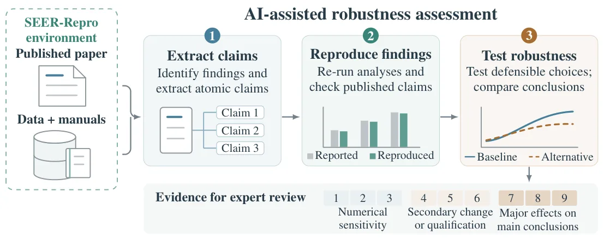
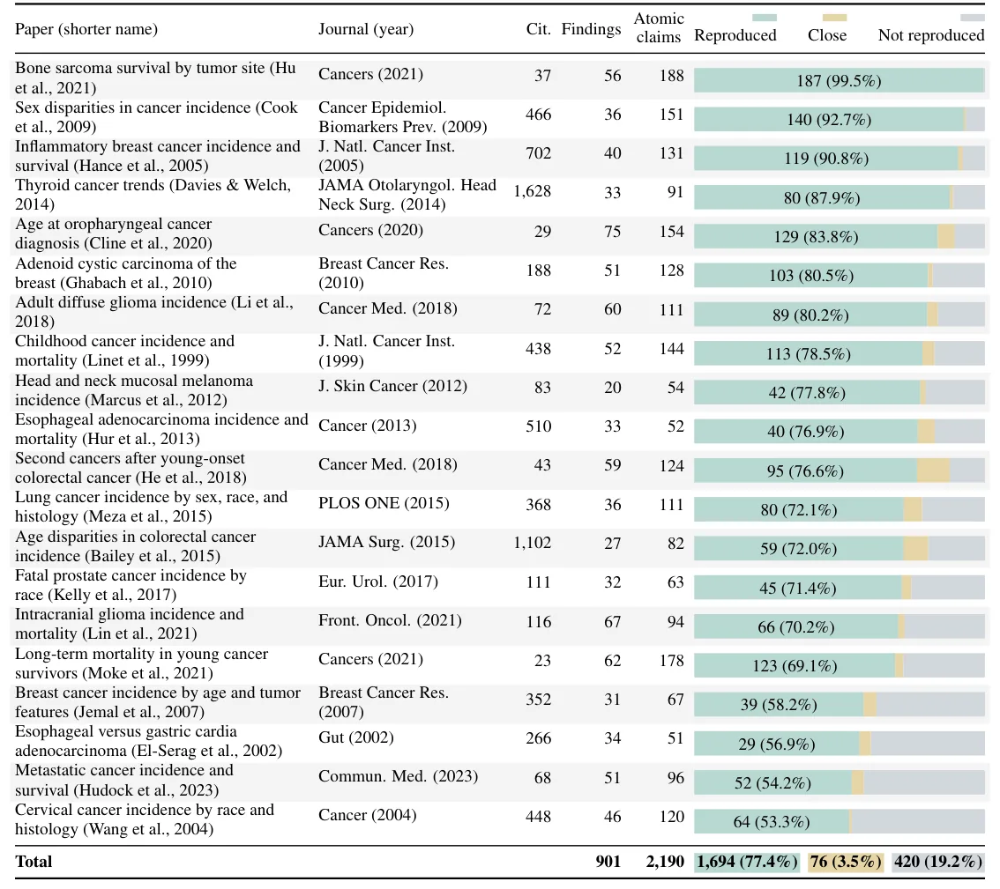
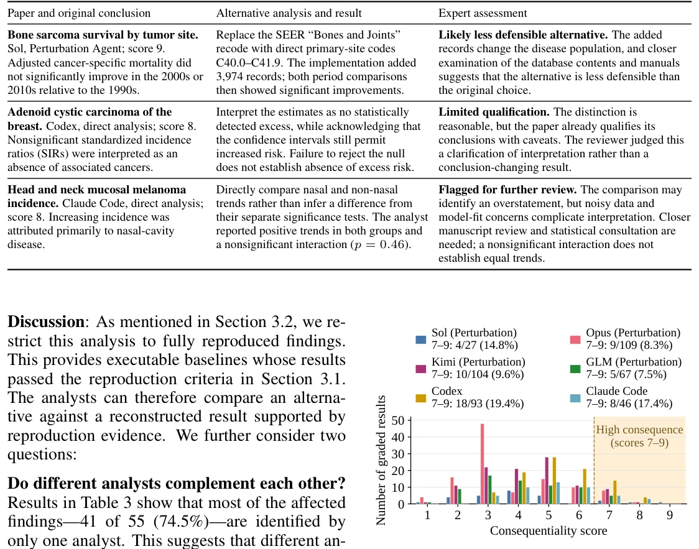

O Problema da Reprodutibilidade na Epidemiologia
A base da descoberta científica repousa na reprodutibilidade e na robustez analítica. No entanto, avaliar essas propriedades exige esforço manual intenso e especializado. Meta-análises e revisões sistemáticas frequentemente precisam reproduzir experimentos ou reanalisar dados com especificações alternativas, um processo limitado pelo custo e pela escassez de expertise.
Estudos em psicologia e ciências sociais já demonstraram que equipes independentes podem chegar a conclusões conflitantes ao analisar a mesma hipótese e conjunto de dados. A questão crítica é se essa sensibilidade às escolhas analíticas se estende à medicina, onde as decisões clínicas afetam diretamente a vida dos pacientes.
Neste contexto, modelos de linguagem de grande escala (LLMs) oferecem uma oportunidade de explorar essa diversidade analítica em escala. Antes de confiar que IAs produzem novos resultados científicos, elas devem primeiro provar sua capacidade de reproduzir estudos existentes e avaliar sua robustez.
Introdução ao SEER-Repro
Os autores apresentam o SEER-Repro, um benchmark composto por 20 estudos publicados que utilizam a base de dados Surveillance, Epidemiology, and End Results (SEER). Mantida pelo National Cancer Institute desde 1973, o SEER integra registros populacionais sobre demografia, características tumorais, tratamento e sobrevivência no câncer.
O banco de dados é massivo: mais de 25.000 publicações usaram o SEER em análises primárias entre 1975 e 2024. A escala fornece perguntas realistas de alto impacto, mas as diferenças nas definições de dados e análises, como cobertura do registro e seleção de coortes, tornam a reconstrução fiel desafiadora.

Metodologia: O Pipeline de Reprodução
O pipeline começa com a extração de achados empíricos de cada artigo. Cada achado é decomposto em afirmações atômicas, onde cada uma envolve um alvo numérico ou qualitativo específico. Por exemplo, uma afirmação pode ser 'a idade média ao diagnóstico foi 63 anos', separada de outras métricas do mesmo achado.
Um agente de codificação recebe o artigo original, os dados e a documentação para reproduzir cada afirmação. Ele identifica os dados relevantes, escreve código de análise e o executa, gerando evidências. Um agente de verificação então compara o resultado reproduzido com o valor original, classificando-o como 'reproduzido' (erro relativo ≤5%), 'próximo' (erro ≤10%) ou 'não reproduzido'.
Análise de Robustez Analítica
A reprodutibilidade é apenas o primeiro passo. O pipeline também avalia a robustez analítica através de três métodos complementares. O primeiro gera relatórios de análise independentes para ver se conclusões contraditórias emergem da mesma pergunta de pesquisa.
O segundo método utiliza um 'Agente de Perturbação'. Este agente identifica escolhas analíticas subjacentes aos achados reproduzidos, propõe alternativas defensáveis e reexecuta a análise. O objetivo é determinar se essas escolhas afetam a conclusão final.
As consequências são pontuadas em uma escala de 1 a 9. Pontuações altas (7-9) indicam mudanças diretas nas conclusões principais, sinalizando que o achado original é sensível a escolhas metodológicas razoáveis.
Desafios na Construção do Benchmark
Reconstruir estudos históricos do SEER enfrenta dois desafios principais. Primeiro, a disponibilidade de dados históricos mudou; por exemplo, Detroit foi excluído de releases posteriores, alterando a cobertura dos registros SEER 9, 13 e 18. O estudo focou no SEER 9 para manter a cobertura histórica completa.
Segundo, os dados e a documentação estão fragmentados. Estudos epidemiológicos frequentemente dependem de dados populacionais externos e manuais específicos. A curadoria desses recursos exigiu interação iterativa com especialistas, pois a identificação do que faltava só ocorria durante a reconstrução das análises.
Resultados: Reprodução de Afirmações
O benchmark SEER-Repro inclui 20 artigos, totalizando 2.190 afirmações atômicas. Utilizando o modelo GPT-5.6 Sol via Codex, o agente de reprodução recuperou 1.694 afirmações com sucesso (77,4%). Outras 76 foram classificadas como 'próximas' (3,5%), enquanto 420 (19,2%) não foram reproduzidas.
Os erros de reprodução foram analisados para identificar a causa raiz. A maioria dos fracassos (59,8%) deveu-se a problemas de dados, como indisponibilidade histórica ou inconsistências nas tabelas. Outras causas incluíram análises insuficientemente especificadas (11,2%), aproximações de software indisponível (6,7%) e erros do próprio agente (11,4%).

Resultados: Detecção de Sensibilidade
O pipeline de robustez identificou escolhas analíticas potencialmente consequential em 9,5% dos achados totalmente reproduzidos. Especificamente, 55 de 579 achados foram sinalizados para revisão de especialistas.
A análise manual de 10 casos sinalizados esclareceu que 9 não estabeleciam mudanças consequential sob alternativas defensáveis. No entanto, um caso foi identificado como um problema potencialmente consequential que requer investigação adicional. Isso valida a capacidade do sistema de filtrar ruído e destacar sinais reais.

Limitações e Escopo
É crucial notar que o estudo não afirma que a IA substitui o julgamento humano. A sensibilidade a uma análise alternativa não invalida o estudo original; ela apenas sinaliza a necessidade de julgamento cuidadoso. O erro na reprodução pode refletir dados históricos indisponíveis, não falhas do modelo.
O benchmark é limitado a 20 estudos do SEER. Embora representativo da epidemiologia do câncer, a generalização para outras áreas médicas ou tipos de dados requer validação futura. Além disso, a dependência de documentação fragmentada e manuais específicos limita a automação total sem intervenção humana.
Conclusão
O SEER-Repro demonstra que agentes de IA podem apoiar a revisão científica reproduzindo achados e testando sua robustez de forma sistemática. Ao recuperar 77,4% das afirmações e priorizar 9,5% dos resultados para revisão, o pipeline oferece uma lista focada com evidências analíticas.
A longo prazo, tais verificações podem se tornar parte da infraestrutura científica, onde os achados publicados são reavaliados rotineiramente à medida que dados e métodos evoluem. Isso torna a revisão científica rigorosa mais acessível, mantendo o julgamento humano no centro do processo.
O que fica
- Agentes de IA reproduziram 77,4% de 2.190 afirmações atômicas em estudos de câncer usando dados do SEER.
- O pipeline detectou 55 achados sensíveis a escolhas analíticas, sinalizando 9,5% dos resultados totalmente reproduzidos para revisão.
- Erros de reprodução foram majoritariamente causados por disponibilidade histórica de dados, não falhas do modelo.
- A IA atua como filtro para revisão por pares, priorizando análises que requerem julgamento humano especializado.
Paper original: AI-Driven Reproducibility and Analytical Robustness in Scientific Discovery
Comentários
Nenhum comentário ainda. Seja o primeiro.